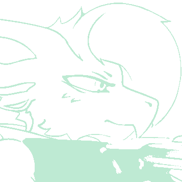

Known Relationships
Hex Mira ------------ Friend Amy Kavinskaya ------ Friend Silver Praehun ------ [DECRYPTING...]
Full Name ------ Ezra Lomura Species -------- Coral Archound Height --------- 6ft 1in / 185 cm Weight --------- 210 lbs Age ------------ [DECRYPTING...] Gender --------- Demigirl Pronouns ------- [She / Her] / [They / Them] Sexuality ------ [UNDECRYPTED] Personality ---- Experimental / Inventive Birthplace ----- [NO DATA] Residence ------ Innovation's Reach Workshop Favorite Food -- [UNDECRYPTED] Favorite Drink - [UNDECRYPTED]

Hex Mira ------------ Friend Amy Kavinskaya ------ Friend Silver Praehun ------ [DECRYPTING...]
Ezra Lomura is an Archound who specializes primarily in the field of engineering. Most notably of which, and most recently, being the area of spacecraft modifications and personal weapons systems. She took a keen interest in piloting not soon after her lab generation, and soon after, began her flight training for certification with the Independent Spacecraft Pilot’s Association of her home world. Once Ezra completed the (very rigorous) training and acquired their ISPA certification, they were gifted a basic, spare vessel by , and soon after, took off from their home world. Ezra’s career was built upon contract work both as a pilot and as an engineering professional. She provided her services, often as both a test pilot for experimental spacecraft, and engineer for extra tuning on some of these vessels.
One such contract had seen her and the benefactor meet to discuss work on a planet only the benefactor had been to. The planet and the system it resided in, both, weren’t anywhere in Ezra’s saved cartographic data. Regardless, Ezra found a secluded place for her ship to drop her off and found one of the world’s ground shuttles to meet the unnamed contract-giver at a nightclub, called the Neon Meow. Sadly, for both parties, negotiations fell through, and the benefactor reportedly became increasingly aggressive. The Archound admitted to drawing her plasma handgun, hidden in her ISPA pilot’s casual wear jacket, after the benefactor took a swing at her. Security was reported to have quickly defused the situation and escorted the contractor out. Ezra took the free time she was given to enjoy the club, and was made a drink by the snow-leopard bartender, who saw everything unfold, as apologies for the benefactor’s behavior. Unfortunately, Archounds are very susceptible to alcoholic beverages. Ezra was provided a temporary stay in one of the establishment's staff rooms to sleep for the night, and returned to her vessel in the morning with her head feeling like it was splitting. She reported the hangover symptoms as her “brain getting stabbed” and her “afterburners sounded like screams in my ear.”
After the events of Neon Meow, between contract work, she’d occasionally come back to Nocturne City, having her small vessel drop her off and pick her up like the first time she had came. Not only was it great for a sense of community, but on occasion, she would find herself modifying the very primitive ballistic weaponry of some of the people she met for this culture’s currency. Eventually, between some years of her work on Earth and elsewhere, she made enough to set up a centralized base for her work. Ezra chose a planet in the Tectis system, an atmospheric planet with a forest that spans a chunk of the solid surface. It never stops raining, but it fluctuates from a drizzle to a torrential downpour. The forest constantly has a slight fogginess to it. Ezra took advantage, and set up a homebase. Their settlement, the Innovation’s Reach Workshop, is made up of three domes with reinforced-glass for much of the surface area. One dome is for her resting area, another for general use like food preparation, and the third, largest, has a workspace for personal weapons and suits, with an underground docking bay for any ships that she works on.
Now, the planet continues to sit as close to untouched as possible, as Ezra sets a weekly schedule of small shipments from her original home world’s production facilities to the Workshop. These shipments contain miscellaneous items, food, and any made-to-order parts. She visits Earth and the Neon Meow on weekends, and occasionally on weekdays. She’s become fast friends with Hex Mira, and has built something of a reputation with the staff after the incident from years ago. Hex has introduced them to more people on Earth, inclusive of Amy Kavinskaya, of whom Ezra’s appreciation of firearms became a shared passion. Nowadays, between regular hyperspace between Tectis 6 and Earth, test-flights of modified vessels, and range-testing of newly built weaponry, Ezra has built a routine and occasionally brings both Hex and Amy back home to the Workshop, both for help and hangout. Recently, she was introduced to Silver Praehun, and is currently working on replacement prosthetics for the crow's missing legs.